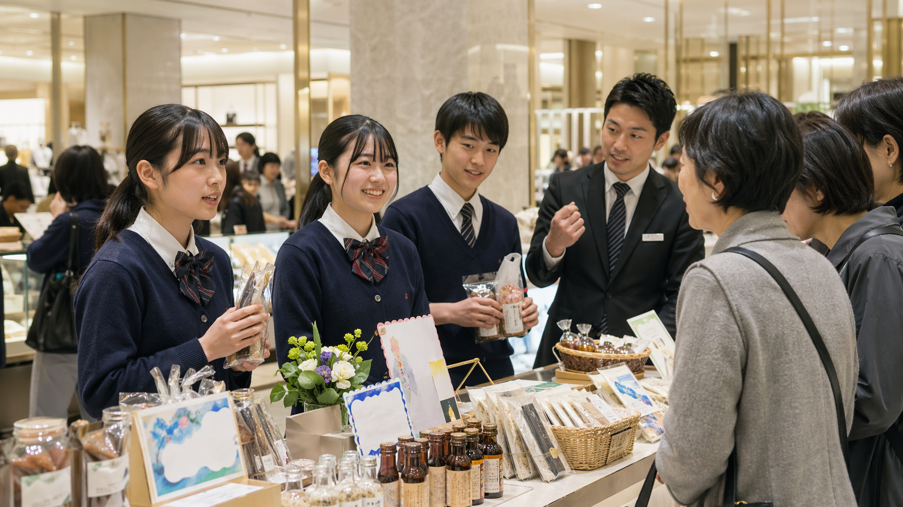
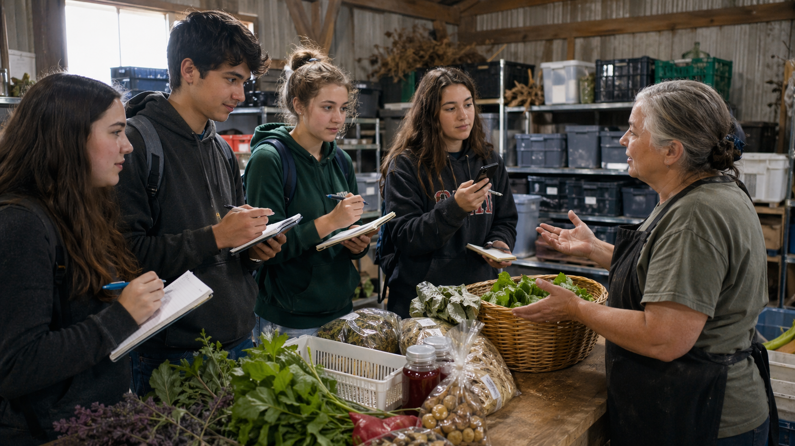

タビマエ
企業テーマを理解し、地域産品・作り手・顧客仮説を調査。班ごとにPOP、販売トーク、SNS告知案を作成。
Concept
企業テーマを理解し、地域産品・作り手・顧客仮説を調査。班ごとにPOP、販売トーク、SNS告知案を作成。
東京の企業拠点で実顧客接点を体験。販売・観察・QR誘導・反応記録を通じて仮説を検証。
販売結果、企業講評、レポート、表彰、ビジネス甲子園導線により、キャリア形成と地域発信へ接続。
Program Catalog
Estimate & JTB Data
Demo Program
地方の魅力ある産品を、百貨店の顧客にどう届けるか。学校で事前調査し、銀座三越で接客・POP・QR誘導・顧客反応を検証し、事後学習で地域発信へ接続します。


Added Demo Program
修学旅行で見た景色・聞いた話・地域課題を、AIと編集知見を使って絵本・物語に変換する探究プログラムです。作家・編集者の講評、AIリテラシー、作品展示までを一体化します。
Regional Showcase
Realize Co., Ltd.
タビアト後、希望校・希望生徒は地域産品のマーケティング、商品企画、販売改善を継続学習。修学旅行で終わらせず、学校の探究成果を次の発表・コンテストへ接続します。